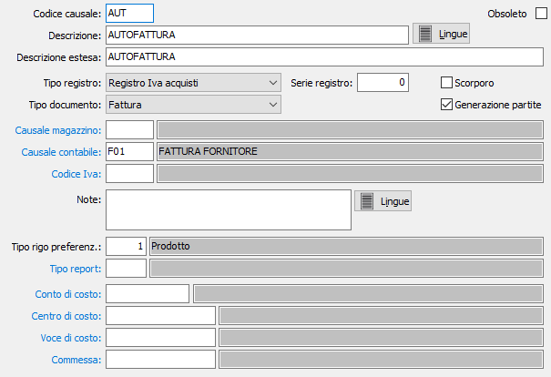

Causali autofatture
Le causali autofatture vengono utilizzate al momento dell’emissione di una autofattura e determinano il tipo di documento da emettere. Le informazioni presenti in una causale di autofattura consentono di gestire correttamente l’imputazione in contabilità, l’eventuale attivazione del magazzino, ecc.

CODICE: codice alfanumerico di 3 caratteri, a libera scelta dell'utente, per individuare la causale attiva. Sul campo sono attive le funzioni di ricerca (F9) sulla tabella stessa.
OBSOLETO: flag attivabile dall’utente per inibire il possibile utilizzo dell’elemento di tabella in esame nelle successive transazioni.
DESCRIZIONE: campo alfanumerico di 30 caratteri per inserire la descrizione della causale attiva. Questa descrizione viene riportata anche nella stampa del documento stesso.
DESCRIZIONE ESTESA: campo alfanumerico di 60 caratteri per inserire la descrizione estesa della causale attiva ad uso interno dell’utente. Questa descrizione non viene stampata sui documenti ma viene visualizzata nelle viste.
TIPO REGISTRO: list box per indicare il registro obbligatorio a cui verrà imputato il documento generato dalla causale attiva. Valori possibili: libro giornale, registro Iva acquisti, registro Iva acquisti in sospensione d'imposta.
SERIE: identifica in numero di sezionale Iva a cui le fatture verranno attribuite in fase di contabilizzazione.
SCORPORO: Definisce se il documento è soggetto a scorporo dell'Iva dal totale del documento in fase di registrazione (casella con segno di spunta). In questo caso i prezzi inseriti nel documenti saranno al lordo di Iva.
TIPO DOCUMENTO: list box per definire il tipo di documento generato dalla causale attiva. Valori possibili: autofattura, nota di debito, nota di credito.
GENERAZIONE PARTITE: abilita, se presente la spunta, la generazione delle partite aperte fornitori da parte del documento generato dalla causale attiva.
CAUSALE MAGAZZINO: codice alfanumerico di 3 caratteri, presente nella tabella Causali di magazzino, che individua i parametri del movimento di magazzino generato automaticamente dal documento attivo. L’informazione può essere omessa in caso di assenza della procedura Gestione magazzino oppure se non si intende generare automaticamente movimenti di magazzino. Sul campo sono attive le funzioni di ricerca (F9) e manutenzione (CTRL+W) sulla tabella stessa.
CAUSALE CONTABILE: codice alfanumerico di 3 caratteri, presente nella tabella Causali contabili, che definisce i parametri del movimento contabile generato dal documento attivo all’atto della contabilizzazione delle fatture. L’informazione può essere omessa in caso di assenza della procedura Contabilità. Sul campo sono attive le funzioni di ricerca (F9) e manutenzione (CTRL+W) sulla tabella stessa.
CODICE IVA: eventuale codice alfanumerico di 3 caratteri, presente nella tabella Aliquote iva, che verrà forzato in tutti i righi del documento attivo in sostituzione dell’aliquota Iva presente in anagrafica prodotti. Sul campo sono attive le funzioni di ricerca (F9) e manutenzione (CTRL+W) sulla tabella stessa.
NOTE: campo note a disposizione dell’utente.
TIPO RIGO PREFERENZIALE: Indica il tipo rigo da proporre in fase di acquisizione della fattura. Sul campo sono attive le funzioni di ricerca (F9).
TIPO REPORT: consente di specificare un tipo di report specifico per i documenti che saranno emessi utilizzando questa causale. Sul campo sono attive le funzioni di ricerca (F9).
CONTO DI COSTO: eventuale codice alfanumerico di 8 caratteri, presente in piano dei conti, per definire il sottoconto contabile di costo a cui verrà addebitato l’imponibile della fattura o della nota di credito. Sul campo sono attive le funzioni di ricerca (F9) e manutenzione (CTRL+W) sulla tabella stessa.
CENTRO DI COSTO: campo significativo solo in presenza del modulo Contabilità analitica opportunamente configurato. Può contenere un codice alfanumerico di 15 caratteri, per definire il centro di costo a cui verrà accreditato l’imponibile della fattura. Sul campo sono attive le funzioni di ricerca (F9) e manutenzione (CTRL+W) sulla tabella stessa.
VOCE DI COSTO: campo significativo solo in presenza del modulo Contabilità analitica opportunamente configurato. Può contenere un codice alfanumerico di 15 caratteri, per definire la voce di costo a cui verrà accreditato l’imponibile della fattura. Sul campo sono attive le funzioni di ricerca (F9) e manutenzione (CTRL+W) sulla tabella stessa.
COMMESSA: campo significativo solo in presenza del modulo Contabilità analitica opportunamente configurato. Può contenere un codice alfanumerico di 15 caratteri, per definire la commessa a cui verrà accreditato l’imponibile della fattura. Sul campo sono attive le funzioni di ricerca (F9) e manutenzione (CTRL+W) sulla tabella stessa.